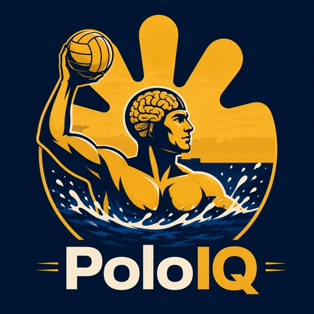

Founder · Est. 2026 · Patent pending
Analytics and coaching intelligence for collegiate water polo
PoloIQ™ is commercial software for coaching staffs. Coaches capture every play by voice during the game, and a camera reads the scoreboard so each event lands at the exact moment on the game clock. An explainable engine weighs 36+ factors to recommend lineups, rotations, and tactics, with its reasoning and a confidence level for each call. It gets better as it sees more games.
- Voice capture logs 20+ stats hands-free, live from the pool deck
- Clock sync uses camera-based scoreboard reading to put every play on the game clock
- Tactics engine gives explainable, self-improving lineup recommendations
- Scouting data covers 2026 results, rosters, and box scores for 17 college programs
U.S. Patent Application No. 64/169,223 · PoloIQ™ is a trademark of Jack Spitzer.